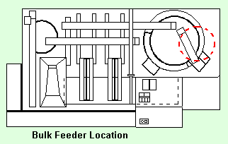
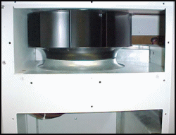
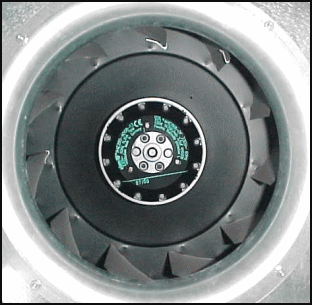

Main Blower Operating Principles
Purpose
This procedure details the operating principles for the main blower.
Module Function
The main cooling blower distributes air though the entire instrument. The power to the blower is on whenever the main instrument power switch is on.
Module Location

Operational Overview
Air enters the blower from the bottom of the instrument, passes through the intake filter, then up and across the blower motor. From the blower motor, air flows into the blower cage fins, then out to ducts that direct the air to the necessary locations. Heated air exits at the rear of the instrument.
- Analytical
- Bulk Feeder
- Reagent Pipettors
- Sample Pipettors
- Fluidics Components
- Substrate Loader
- Reagent Coolers
- Sample Storage
Accessing the Blower
To access the blower, remove the cover on the rear of the instrument.

Blower Motor and Cage
This picture shows the blower motor located inside the cage area of the fan. Locating the blower motor inside the fan cage area, passes cooling air across the motor winding area before the air enters the cage fins. The fan cage is designed with angled fins to increase the efficiency of the fan.
